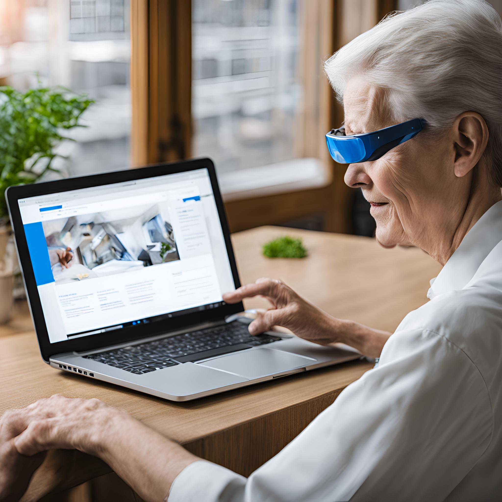

Como Navegar com Acessibilidade
Para facilitar a navegação, oferecemos diversas ferramentas adaptadas às necessidades de pessoas cegas. Aqui estão algumas dicas para aproveitar ao máximo os recursos de acessibilidade:
Leitores de Tela: Todos os elementos do nosso site são compatíveis com leitores de tela. Garantimos que textos alternativos (alt text) estão presentes em imagens, ícones e botões, permitindo que o conteúdo seja lido de forma eficiente.
Teclas de Atalho: Você pode navegar por nosso site usando o teclado. Oferecemos atalhos que permitem acessar menus, links e seções principais sem a necessidade de um mouse.
Estrutura Semântica Clara: Nossa página foi construída com uma estrutura HTML semântica que facilita a navegação. Seções, cabeçalhos e links foram organizados de forma lógica para que os leitores de tela identifiquem facilmente o conteúdo.
